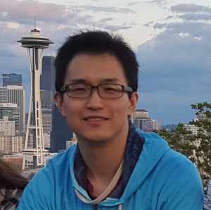

Minjia Zhang
(he/him/his)
The Grainger College of Engineering Computer Science
University of Illinois Urbana-Champaign
Address: Thomas M. Siebel Center for Computer Science, 201 North Goodwin Avenue MC 258 Urbana, IL 61801
Email: minjiaz|at|illinois|dot|edu
About Me
I am joning as an assistant professor (tenure-track) at the Grainger College of Engineering Computer Science of the University of Illinois Urbana-Champaign. Prior to my appointment at UIUC, I had wonderful seven years at Microsoft Research Redmond and WebXT division as a Principal Researcher and technical lead. I have had all sorts of fun of developing highly efficient and cost-effective systems and algorithms, including but not limited to: enabling and accelerating large-scale deep learning training on parallel/distributed/heterogeneous hardware, building ultra-fast inference engine, different types of model compression, large-scale data management. My research works have been published in major venues, ranging from (i) system and high-performance computing conferences, such as ASPLOS, NSDI, USENIX ATC, PPoPP, SC, HPCA, (ii) top-tier machine learning conferences, including ICML, NeurIPS, ICLR, AAAI, etc, and (ii) data management conferences, such as SIGMOD, WSDM, CIKM. Several of my work has been applied to Microsoft systems and products, such as Bing, Ads, Azure SQL, Windows, etc., leading to significant latency improvement and cost reduction.
I am also an early member of DeepSpeed, an open-source deep learning optimization library that makes training and inference DL models easy, efficient, and effective. It has been widely adopted by both the industry and academia and have become a common backend for various popular DL frameworks such as HuggingFace, PyTorch Lightning, Fairscale, etc, and it has enabled training some of the largest language models in the world, such as Megatron-Turing 530B. I was also the co-chair of the engineering/scaling group of the BigScience project, helping training the BLOOM 176B model, which was once the world's largest open multilingual language model. Before DeepSpeed, I drive the DeepCPU project at Microsoft, a DL inference optimization library that brought order-of-magnitude latency and cost reduction to production DL models. Before joining Microsoft, I finished my Ph.D. from the Computer Science Department at Ohio State University in May 2016, where I was a member of the PLaSS group working on building efficient and scalable systems with strong semantics for parallel programs and advised by Prof. Michael D. Bond. Along the way, I spent the summer of 2015, the summer/fall of 2016 at Microsoft Research Redmond.🔥 Prospective students: I am always looking for highly-motivated students who are intersted in systems or algorithms on machine learning, deep learning, and their applications in large-scale applications. Please feel free to reach out to me by sending me an email and apply to our graduate programs.
-
Recent News
- [12/27/2023] Will be serving as a PC for USENIX ATC 2024.
- [12/16/2023] I will be serving as a penalist at the 3rd Efficient Natural Language and Speech Processing (ENLSP) workshop at NeurIPS 2023, New Orleans. Thank you Yu, Yue, Medhi, and Soheila for the invitation!
- [12/9/2023] Our paper on enabling efficient DNN training via data efficient optimizations has been accepted at AAAI 2024!
- [12/7/2023] Our paper on enabling efficient DNN training on preemptible instances has been accepted at NSDI 2024! Congrats everyone!
- [12/27/2023] Will be serving as a reviewer for ICML 2024.
- [10/30/2023] Will be serving as a reviewer for CVPR 2024.
- [9/8/2023] Will be serving as a reviewer for MLSys 2024.
- [8/24/2023] Will be serving as a reviewer for ICLR 2024.
- [8/15/2023] Our paper on cost-effective on-device continual learning has been accepted at MobiCom 2023!
- [7/15/2023] Our paper on adversarial fine-tuning efficiency optimizations has been accepted at ECAI 2023!
- [1/21/2023] Our paper on compressed communication for large-scale training 0/1 Adam has been accepted at ICLR 2023!
- [11/7/2022] Our paper on fast and accurate vector search via intra-query parallelism has been accepted at PPoPP 2023!
- [9/20/2022] Our paper on large-scale GNN training on a single-node machine has been accepted at ASPLOS 2023!
- [9/14/2022] Three papers have been accepted at NeurIPS 2022! 2665 out of 10411 submissions are accepted.
- [7/8/2022] Our paper on large-scale DNN training on spot instances has been accepted at NSDI 2023! 50 out of 272 submissions are accepted.
- [6/13/2022] Our paper on large-scale inference for Transformer models has been accepted at SC 2022! 81 out of 320 submissions are accepted.
- [5/18/2023] Will be serving as a reviewer for ECAI 2023.
- [05/5/2022] Our paper on advancing the next generation of AI via Mixture-of-Experts has been accepted at ICML 2022! 1117 out of 5630 submissions are accepted.
- [3/21/2023] Will be serving as a PC for ASPLOS 2024.
- [2/24/2022] Our paper on continual learning has been accepted at DAC 2022!
- [2/6/2023] Will be serving as a reviewer for ICCV 2023.
- [12/1/2021] Our paper on adversarial data augmentation for knowledge distillation has been accepted at AAAI 2022! 1349 out of 9251 submissions are accepted.
- [10/11/2021] Our paper on graph sampling and pruning for nearest neighbor search has been accepted at WSDM 2022! 159 out of 786 submissions are accepted.
- [9/28/2021] Our paper on semi-structured sparsity for compressing Transformer networks has been accepted at NeurIPS 2021.
Research Interests and Publications
DNN Training at Scale and Speed: Breaking the Memory Wall and Beyond
- NSDI 2024 "Parcae: Proactive, Liveput-Optimized DNN Training on Preemptible Instances", Jiangfei Duan, Ziang Song, Xupeng Miao, Xiaoli Xi, Dahua Lin, Harry Xu, Minjia Zhang, Zhihao Jia
- AAAI 2024 "DeepSpeed Data Efficiency: Improving Deep Learning Model Quality and Training Efficiency via Efficient Data Sampling and Routing", Conglong Li, Zhewei Yao, Xiaoxia Wu, Minjia Zhang, Connor Holmes, Cheng Li, Yuxiong He
- ECAI 2023 "Revisiting the Efficiency-Accuracy Tradeoff in Adapting Transformer Models via Adversarial Fine-Tuning", Minjia Zhang, Niranjan Uma Naresh, Yuxiong He
- ICLR 2023 "Maximizing Communication Efficiency for Large-scale Training via 0/1 Adam", Yucheng Lu, Conglong Li, Minjia Zhang, Christopher De Sa, Yuxiong He
- ASPLOS 2023 "Betty: Enabling Large-Scale GNN Training with Batch-Level Graph Partitioning", Shuangyan Yang, Minjia Zhang, Wenqian Dong, Dong Li
- NSDI 2023 "Bamboo: Making Preemptible Instances Resilient for Affordable Training of Large DNNs", John Thorpe, Pengzhan Zhao, Jonathan Eyolfson, Yifan Qiao, Zhihao Jia, Minjia Zhang, Ravi Netravali, Guoqing Harry Xu
- ICML 2022 "Advancing Mixture-of-Experts Inference and Training to Power Next-Generation AI Scale", Samyam Rajbhandari, Conglong Li, Zhewei Yao, Minjia Zhang, Reza Yazdani Aminabadi, Ammar Ahmad Awan, Jeff Rasley, Yuxiong He
- NeurIPS 2022 "Curriculum learning: A regularization method for efficient and stable billion-scale gpt model pre-training", Conglong Li, Minjia Zhang, Yuxiong He
- USENIX ATC 2021 "ZeRO-Offload: Democratizing Billion-Scale Model Training", Jie Ren, Samyam Rajbhandari, Reza Yazdani Aminabadi, Olatunji Ruwase, Shuangyan Yang, Minjia Zhang, Dong Li, Yuxiong He
- HPCA 2021 "Efficient Tensor Migration and Allocation on Heterogeneous Memory Systems for Deep Learning", Jie Ren, Jiaolin Luo, Kai Wu, Minjia Zhang, Hyeran Jeon, Dong Li
- NeurIPS 2020 "Accelerating Training of Transformer-Based Language Models with Progressive Layer Dropping", Minjia Zhang, Yuxiong He
Production Needs Ultra-Fast Inference
- SC 2022 "Enabling Efficient Inference of Transformer Models at Unprecedented Scale", Reza Yazdani Aminabadi, Samyam Rajbhandari, Minjia Zhang, Ammar Ahmad Awan, Cheng Li, Du Li, Elton Zheng, Olatunji Ruwase, Shaden Smith, Yuxiong He
- MLSys Workshop 2022 "A Survey of Multi-Tenant Deep Learning Inference on GPU", Fuxun Yu, Di Wang, Longfei Shangguan, Minjia Zhang, Chenchen Liu, Xiang Chen, in the MLSYS'22 workshop on Cloud Intelligence/AIOps
- TECS 2022 "SHARP: An Adaptable, Energy-Efficient Accelerator for Recurrent Neural Network", Reza Yazdani, Olatunji Ruwase, Minjia Zhang, Yuxiong He, Jose-Maria Arnau, Antonio Gonzalez, in the ACM Transactions on Embedded Computing Systems 2022
- ICLR 2021 "DynaTune: Dynamic Tensor Program Optimization in Deep Neural Network Compilation", Minjia Zhang*, Menghao Li*, Chi Wang, Minqin Li.
- IPDPS 2021 "DUET: Compiler-Aware Subgraph Scheduling for Tensor Programs on a Coupled CPU-GPU Architecture", Minjia Zhang*, Zehua Hu*, Minqin Li. *Equal contribution.
- NeurIPS 2020 "AdaTune: Adaptive Tensor Program Compilation Made Efficient", Menghao Li*, Minjia Zhang*, Chi Wang, Minqin Li. *Equal contribution.
- USENIX OpML 2019 "Accelerating Large Scale Deep Learning Inference through DeepCPU at Microsoft", Minjia Zhang, Samyam Rajbandari, Wenhan Wang, Elton Zheng, Olatunji Ruwase, Jeff Rasley, Jason Li, Junhua Wang, Yuxiong He
- USENIX ATC 2018 "DeepCPU: Serving RNN-based Deep Learning Models 10x Faster", Minjia Zhang*, Samyam Rajbhandari*, Wenhan Wang, Yuxiong He. *Equal contribution.
Smaller, Faster, and Cheaper DNN via Model Compression
- Preprint "Compressing Pre-trained Transformers via Low-Bit NxM Sparsity for Natural Language Understanding", Connor Holmes, Minjia Zhang, Yuxiong He, Bo Wu
- NeurIPS 2022 "Extreme Compression for Pre-trained Transformers Made Simple and Efficient", Xiaoxia Wu, Zhewei Yao, Minjia Zhang, Conglong Li, Yuxiong He
- NeurIPS 2022 "ZeroQuant: Efficient and Affordable Post-Training Quantization for Large-Scale Transformers", Zhewei Yao, Reza Yazdani Aminabadi, Minjia Zhang, Xiaoxia Wu, Conglong Li, Yuxiong He
- AAAI 2022 "Adversarial Data Augmentation for Task-Specific Knowledge Distillation of Pre-Trained Transformers", Minjia Zhang, Niranjan Uma Naresh, Yuxiong He
- NeurIPS 2021 "NxMTransformer: Semi-Structured Sparsification for Natural Language Understanding via ADMM", Connor Holmes, Minjia Zhang, Yuxiong He, Bo Wu
- NeurIPS 2018 “Navigating with Graph Representations for Fast and Scalable Decoding of Neural Language Models”, Minjia Zhang, Xiaodong Liu, Wenhan Wang, Jianfeng Gao, Yuxiong He
- ICLR 2018 “Learning Intrinsic Sparse Structures within Long Short-Term Memory”, Wei Wen, Yuxiong He, Samyam Rajbhandari, Minjia Zhang, Wenhan Wang, Fang Liu, Bin Hu, Yiran Chen, Hai Li
AI4Science and LLM Applications
- NeurIPS AI4Science Workshop "DeepSpeed4Science Initiative: Enabling Large-Scale Scientific Discovery through Sophisticated AI System Technologies", Shuaiwen Leon Song, Bonnie Kruft, Minjia Zhang, Conglong Li, Shiyang Chen, Chengming Zhang, and all
- Preprint "DeepSpeed-Chat: Easy, Fast and Affordable RLHF Training of ChatGPT-like Models at All Scales", Zhewei Yao, Reza Yazdani Aminabadi, Olatunji Ruwase, Samyam Rajbhandari, Xiaoxia Wu, Ammar Ahmad Awan, Jeff Rasley, Minjia Zhang, Conglong Li, Connor Holmes, Zhongzhu Zhou, Michael Wyatt, Molly Smith, Lev Kurilenko, Heyang Qin, Masahiro Tanaka, Shuai Che, Shuaiwen Leon Song, Yuxiong He
- Preprint "DeepSpeed-VisualChat: Multi-Round Multi-Image Interleave Chat via Multi-Modal Causal Attention", Zhewei Yao, Xiaoxia Wu, Conglong Li, Minjia Zhang, Heyang Qi, Olatunji Ruwase, Ammar Ahmad Awan, Samyam Rajbhandari, Yuxiong He
Efficient Nearest Neighbor Methods and Their Applications in Large-scale Vector Search
- PPoPP 2023 "iQAN: Fast and Accurate Vector Search with Efficient Intra-Query Parallelism on Multi-Core Architectures", Zhen Peng, Minjia Zhang, Kai Li, Ruoming Jin, Bin Ren
- WSDM 2022 "GraSP: Optimizing Graph-based Nearest Neighbor Search with Subgraph Sampling and Pruning", Minjia Zhang, Wenhan Wang, Yuxiong He
- NeurIPS 2020 "HM-ANN: Efficient Billion-Point Nearest Neighbor Search on Heterogeneous Memory", Jie Ren, Minjia Zhang, Dong Li
- SIGMOD 2020 "Improving Approximate Nearest Neighbor Search through Learned Adaptive Early Termination", Conglong Li, Minjia Zhang, Yuxiong He, David Anderson
- CIKM 2019 "GRIP: Multi-Store Capacity-Optimized High-Performance Nearest Neighbor Search for Vector Search Engine", Minjia Zhang, Yuxiong He
Bringing AI to Edge: Running Powerful AI Programs on IoT and Low-Power Mobile Devices
- MobiCom 2023 "Cost-effective On-device Continual Learning over Memory Hierarchy with Miro", Xinyue Ma, Suyeon Jeong, Minjia Zhang, Di Wang, Jonghyun Choi, Myeonjae Jeon
- DAC 2022 "CarM: Hierarchical Episodic Memory for Continual Learning", Soobee Lee, Minindu Weerakoon, Jonghyun Choi, Minjia Zhang, Di Wang, Myeongjae Jeon
Parallel Computing and Scalable Runtime
- TOPC 2017 "Hybridizing and Relaxing Dependence Tracking for Efficient Parallel Runtime Support", Man Cao, Minjia Zhang, Aritra Sengupta, Swarnendu Biswas, and Michael D. Bond, In ACM Transactions on Parallel Computing.
- ISMM 2017 "Avoiding Consistency Exceptions Under Strong Memory Consistency Models", Minjia Zhang, Swarnendu Biswas, Michael D. Bond, in the 2017 ACM SIGPLAN International Symposium on Memory Management.
- CC 2017 "Lightweight Data Race Detection for Production Runs", Swarnendu Biswas, Man Cao, Minjia Zhang, Michael D. Bond, and Benjamin P. Wood, in the 26th International Conference on Compiler Construction.
- PPoPP 2017 "On the Problem of Consistency Exceptions in the Context of Strong Memory Models", Minjia Zhang, Swarnendu Biswas, Michael D. Bond, in the 22th ACM SIGPLAN Symposium on Principles and Practice of Parallel Programming.
- CC 2016 "Relaxed Dependence Tracking for Parallel Runtime Support", Minjia Zhang, Swarnendu Biswas, Michael D. Bond, in the 25th International Conference on Compiler Construction.
- PPoPP 2016 "Drinking from Both Glasses: Combining Pessimistic and Optimistic Tracking of Cross-Thread Dependences", Man Cao, Minjia Zhang, Aritra Sengupta, and Michael Bond, in the 21th ACM SIGPLAN Symposium on Principles and Practice of Parallel Programming.
- OOPSLA 2015 "Valor: Efficient, Software-Only Region Conflict Exceptions"(Distinguished Artifact Award, Distinguished Paper Award), Swarnendu Biswas, Minjia Zhang, Michael D. Bond, and Brandon Lucia, in the 2015 ACM SIGPLAN International Conference on Object-Oriented Programming, Systems, Languages, and Applications.
- PPoPP 2015 "Low-Overhead Software Transactional Memory with Progress Guarantees and Strong Semantics", Minjia Zhang, Jipeng Huang, Man Cao, and Michael D. Bond, in the 20th ACM SIGPLAN Symposium on Principles and Practice of Parallel Programming.
- ASPLOS 2015 "Hybrid Static-Dynamic Analysis for Statically Bounded Region Serializability", Aritra Sengupta, Swarnendu Biswas, Minjia Zhang, Michael D. Bond, and Milind Kulkarni, in the 20th International Conference on Architectural Support for Programming Languages and Operating Systems.
- SPLASH 2015 Companion "SIRe: An Efficient Snapshot Isolation based Memory Model for Detecting and Tolerating Region Conflicts", Minjia Zhang, in 2015 ACM SIGPLAN International Conference on Systems, Programming, Languages and Applications: Software for Humanity.
- WoDet 2014 "Drinking from Both Glasses: Adaptively Combining Pessimistic and Optimistic Synchronization for Efficient Parallel Runtime Support", Man Cao, Minjia Zhang, and Michael D. Bond, in the 5th Workshop on Determinism and Correctness in Parallel Programming.
- OOPSLA 2013 "Octet: Capturing and Controlling Cross-Thread Dependences Efficiently", Michael D. Bond, Milind Kulkarni, Man Cao, Minjia Zhang, Meisam Fathi Salmi, Swarnendu Biswas, Aritra Sengupta, and Jipeng Huang, in the 2013 ACM SIGPLAN Conference on Object-Oriented Programming, Systems, Languages, and Applications.
- ICPP 2011 "Memcached Design on High Performance RDMA Capable Interconnects", J. Jose, H. Subramoni, M. Luo, M. Zhang, J. Huang, M. W. Rahman, N. S. Islam, X. Ouyang, S. Sur and D. K. Panda, in the 40th International Conference on Parallel Processing.
- ICPADS 2010 "VirtCFT: A Transparent VM-level Fault-Tolerant System for Virtual Clusters", Minjia Zhang,Hai Jin,Song Wu,Xuanhua Shi, in IEEE 16th International Conference on Parallel and Distributed Systems.
Patents
- Minjia Zhang, Yuxiong He, "Multi-Layer Semantic Search", U.S. Patent, MS# 406007-US-NP, 2019
- Minjia Zhang, Xiaodong Liu, Wenhan Wang, Jianfeng Gao, Yuxiong He, “Graph Representations for Identifying a Next Word”, US 2019 / 0377792 A1
- Minjia Zhang, Samyam Rajbhandari, Wenhan Wang, Yuxiong He, “Deep Learning Model Scheduling”, US 2019 / 0311245 A1
Talks
- Invited panel speaker at the Efficient Natural Language and Speech Processing (ENLSP-III) workshop at NeurIPS 2023
- Presented work on "Efficient System and Algorithm Design for Deep Learning Training and Inference", University of Illinois at Urbana-Champaign, Purdue University, University of Virginia, Univeresity of Minnesota, Indiana University Bloomington, Colorado School of Mines, Stevens Institute of Technology
- Presented work on "XTC: Extreme model compression made simple and efficient" at NeurIPS 2022
- Invited talk on "Extreme Compression for Pre-trained Transformers Made Simple and Efficient" at Intel AI Group, July 28th 2022
- Invited talk by Zhihao Jia on "DeepSpeed: The library to accelerate training and inference of DNN at scale" at CMU, April 18th 2022
- Invited talk on "DeepSpeed: The library to accelerate training and inference of DNN at scale" at the Efficient Large-Scale AI Workshop as a part of MSR Project Green
- Invited talk by Myeongjae Jeon on "DeepSpeed: The library to accelerate training and inference of DNN at scale" at UNIST, April 13th 2022
- Invited lecture on "New algorithms for Approximate Nearest Neighbor Search Systems at Scale" at Kent State University, October 20, 2022
- Presented work on graph sampling and pruning for nearest neighbor search at WSDM 2022
- Invited talk on "DL Inference and Training Optimization Towards Speed and Scale" at Tsinghua AIR 2021
- Invited keynote speech on "DL Inference and Training Optimization Towards Speed and Scale" at EMDC 2021
- Presented work on DL inference through heterogeneous devices at IPDPS 2021
- Presented work on "DynaTune: Dynamic Tensor Program Optimization in Deep Neural Network Compilation" at ICLR 2021
- Invited keynote speech on "DL Inference and Training Optimization Towards Speed and Scale" at EMDC 2021
- Presented work on "Accelerating Training of Transformer-Based Language Models with Progressive Layer Dropping" at NeurIPS 2020
- Presented work on "AdaTune: Adaptive Tensor Program Compilation Made Efficient" at NeurIPS 2020
- Invited talk on "TVM@Microsoft" at the TVM and Deep Learning Compilation Conference 2019, Seattle, Washington, US
- Presented work on "GRIP: Multi-Store Capacity-Optimized High-Performance Nearest Neighbor Search for Vector Search Engine" at CIKM 2019, Beijing, China
- Presented work on "Accelerating Large Scale Deep Learning Inference through DeepCPU at Microsoft" at 2019 USENIX OpML, May 2019, Santa Clara, CA, USA
- Presented work on "DeepCPU: Serving RNN-based Deep Learning Models 10x Faster" at 2018 USENIX Annual Technical Conference, July 2018, Boston, MA, USA
- Invited talk on "DeepCPU: Deep Learning Serving Optimizations on CPUs" at the Deep Learning workshop at Microsoft TechFest 2018, March 2018, Redmond, WA, USA
- Invited talk on "DeepCPU: Deep Learning Serving Optimizations on CPUs" at Microsoft Research Talk Series, February 2018, Redmond, WA, USA
- Presented work on "DeepCPU: Deep Learning Serving Optimizations on CPUs" at Machine Learning, AI & Data Science Conference (MLADS) December 2017, Redmond, WA, USA
- Presented work on detecting and tolerating region conflicts to support region snapshot isolation at ACM Student Research Competition, OOPSLA 2015, Pittsburg, PA, USA
- Presented work on low-overhead and scalable software transactional memory with strong progress guarantees at the 20st ACM SIGPLAN Symposium on Principles and Practice of Parallel Programming, PPoPP 2015, San Francisco, CA, USA
Professional Service
- Organizer: PLDI 2019 Publicitiy Co-Chair
- Area/Session Chair: ASPLOS 2019 Machine Learning Track Session Chair
- Program Committee: USENIX ATC 2024, ASPLOS 2023, ICDE 2023 Industry and Applications Track, MLSys 2023, IPDPS 2023, IPDPS 2021, IPDPS 2020, IPDPS 2019, IPDPS 2018, ASPLOS 2018 Shadow PC, PLDI 2017 Artifact Evaluation, SPLASH 2015 Artifact Evaluation, PLDI 2015 Artifact Evaluation
- Conference Reviewer: ICLR 2024, ICLR 2023, AAAI 2023, CVPR 2023, ICCV 2023, ECAI 2023, ICLR 2022, AAAI 2022, CVPR 2022, USENIX ATC 2022, ICML 2022, ECCV 2022, NeurIPS 2022, ASPLOS 2021, AAAI 2021, ICLR 2021, CVPR 2021, ICCV 2021, ICML 2021, NeurIPS 2021, NeurIPS 2020, ICLR 2020, NeurIPS 2019, NeurIPS 2019 Reproducibility Challenge, PLDI 2019, ASPLOS 2019, Middleware 2018 subreviewer, ICAC 2018 subreviewer, IEEE Cloud 2018 subreviewer, HiPC 2017 subreviewer, ICAC 2017 subreviewer, WTTM 2015 subreviewer.
- Journal Reviewer: Transactions on Machine Learning Research (2022-2023), Journal of Systems and Software (2020), IEEE Transaction on Cloud Computing (2019-2020), ACM Transaction on Privacy and Security (2019), Journal of Computer Science (2017-2018), Concurrency and Computation: Practice and Experience (2016-2017)